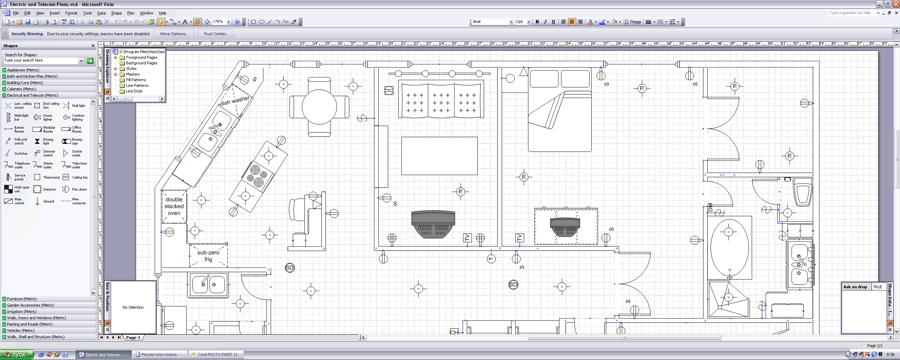
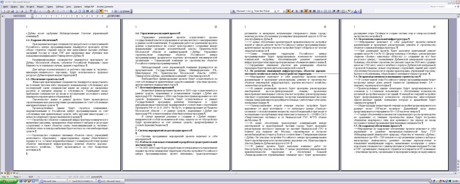
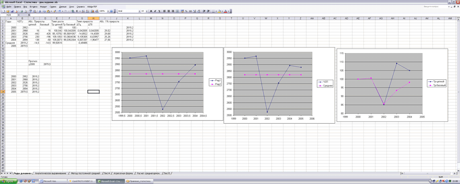

Visio на двух мониторах
 Еще давно, в 2000 году, кажется, мне нужно было настроить компьютер у которого в качестве видеокарты использовалась Matrox G450 DualHead. Это видеокарта для работы на двух мониторах. Конечно, быстро был найден второй монитор и мне представилась возможность поработать тогда еще в Visio 2000 на двух 19” мониторах. Общая рабочая площадь с диагональю в метр оставила неизгладимое впечатление.
Еще давно, в 2000 году, кажется, мне нужно было настроить компьютер у которого в качестве видеокарты использовалась Matrox G450 DualHead. Это видеокарта для работы на двух мониторах. Конечно, быстро был найден второй монитор и мне представилась возможность поработать тогда еще в Visio 2000 на двух 19” мониторах. Общая рабочая площадь с диагональю в метр оставила неизгладимое впечатление.
Но прогресс не стоит на месте и уже сейчас двухмониторные рабочие станции не вызывают удивление, более того, сейчас почти все видеокарты имеют два выхода. У таких конфигураций есть ряд достоинств и недостатков. В процессе эксперимента мы рассмотрим наиболее характерные.
Итак, найдены 2 добровольца, согласившиеся дать мне мониторы на время.Подключаем и включаем.
Так как у меня видеокарта на чипе NVidia, то запуском простого мастера и ответив на ряд вопросов, я получил рабочий стол в SPAN режиме с разрешением 2560*1024. Думаю, на любой другой видеокарте этот процесс не менее прост. И сразу выплыл первый недостаток. Драйвер не может работать в такой конфигурации с двумя цветовыми профилям для каждого монитора по отдельности. Также, из-за того, что мониторы у меня были разных производителей, то мне пришлось долго калибровать цвета. Причем в последствии я просто настроил вторичный монитор, а потом профилем настроил первичный монитор под вторичный. Это оказался самый простой вариант.

Вторым недостатком считается черная полоса из полей 2-х мониторов посреди экрана. Но достаточно быстро адаптируешься и вскоре она уже почти незаметна.
Третьим недостатком является то, что хотя большинство программ корректно работает с двумя мониторами, попадаются программы, которые функционируют в пределах только одного монитора.
Самое большое достоинство это, несомненно, просто огромное рабочее пространство с диагональю экрана в 72,6 см (2x 17" LCD-монитора).
Как уже было сказано ранее, мой опыт запуска Visio 2000 был успешный. Как оказалось, эта тенденция сохранилась. И Visio 2002, и Visio 2003 и Visio 12 beta полностью функционировали в данной конфигурации.
На двух мониторах в Visio очень удобно работать с большими альбомными форматами.



Можно открыть по одному окну трафаретов и слева, и справа, и продолжать комфортно работать. Места очень много. Панели инструментов помещаются вдоль всего экрана, и этим освобождается еще больше рабочего пространства. В целом, в одну линию умещается 4-5 панелей инструментов. Т.е. в идеале можно сформировать такую панель инструментов, когда не надо будет выбирать что-то в меню. Кстати, достаточно интересной возможностью является вертикальное расположение основного меню.
Что касается остальных программ из Office’а, то они тоже полностью функционируют в данном режиме. В Word’е, к примеру, можно комфортно работать сразу с 4-мя листами A4.

Пример работы в Excel.

Статьи: 1 2 3 4 5 6 7 8 9 10 11 12 13 14 15 16 17 18 19 20 21 22 23 24 25 26 27 28 29 30
В начало раздела
Автор: Ничков Алексей (a.k.a. Digitall)